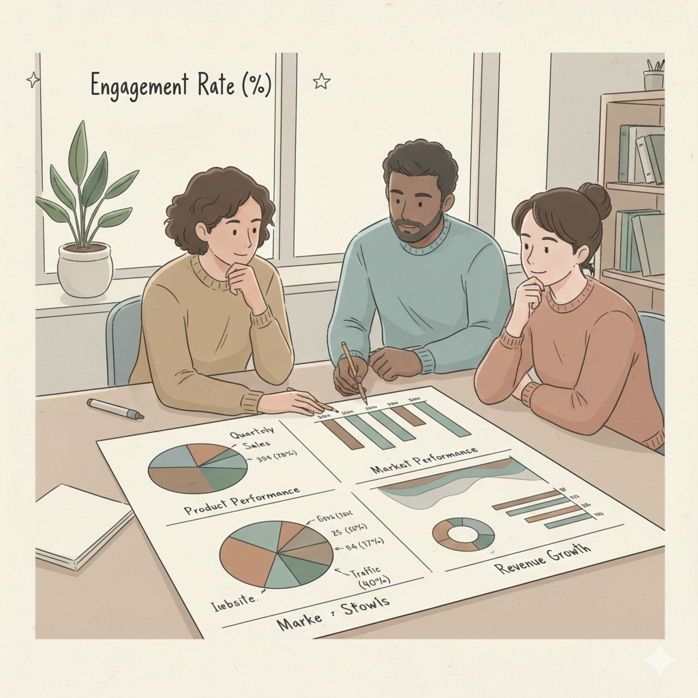

Análisis de datos
Exploramos tus datos para encontrar patrones, tendencias y oportunidades de mejora.
Ayudamos a empresas y emprendedores a entender sus datos, automatizar procesos y visualizar información clave para crecer.

Analizamos datos para detectar oportunidades, optimizar decisiones y construir reportes claros que ahorren tiempo y reduzcan errores.
Exploramos tus datos para encontrar patrones, tendencias y oportunidades de mejora.
Automatizamos procesos manuales y reportes para ahorrar tiempo y reducir errores.
Diseñamos dashboards claros y accionables para tomar mejores decisiones.
Analizamos tus objetivos y necesidades reales.
Procesamos, limpiamos y exploramos la información.
Insights claros, visuales y accionables.
Datos entendibles y bien organizados.
Procesos automáticos y reportes eficientes.
Información confiable para actuar con seguridad.
Contactanos y empecemos a transformar tu información en decisiones inteligentes.